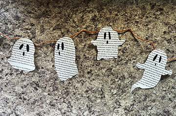

Step 5: Stringing the Ghosts
Decide the distance in between each ghost you want and line the ghost up with your measurements. Hold the ghost and the string together then clip the clothes pin to keep them together in place.

Optional: You can use string, yarn, or even fishing line depending on the look you want!